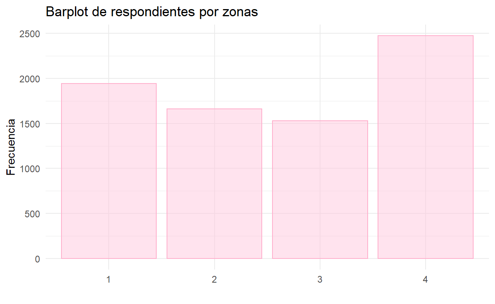
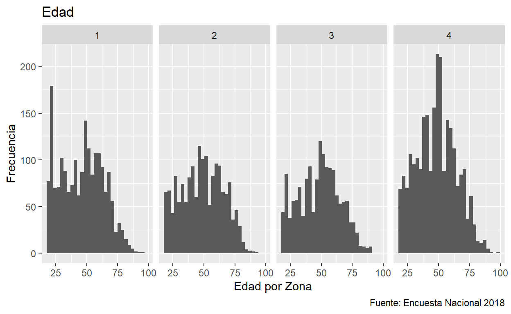
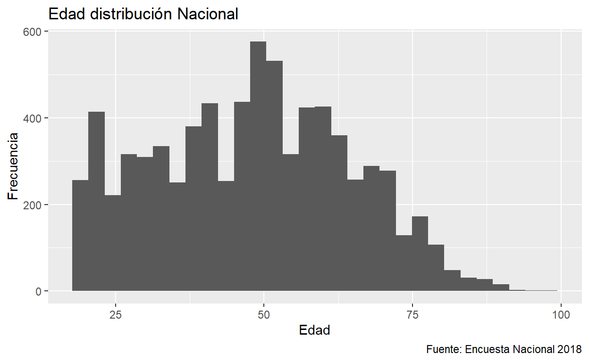
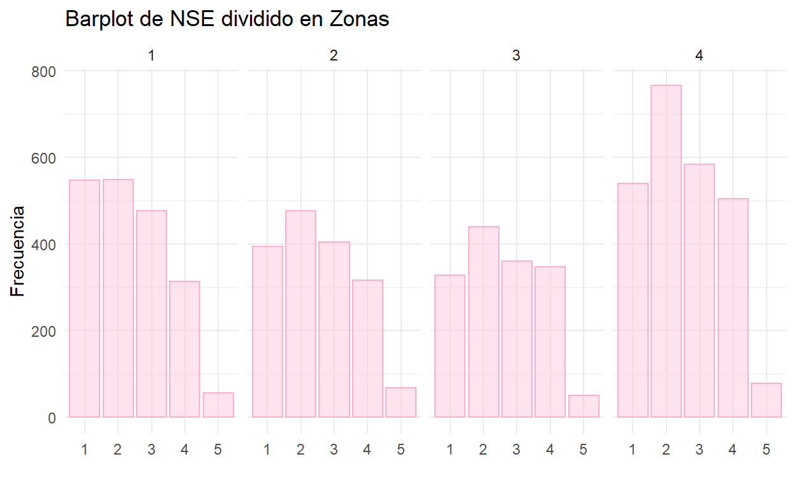
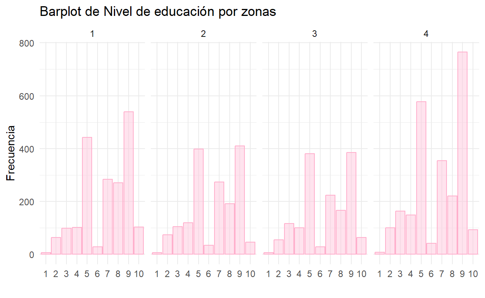
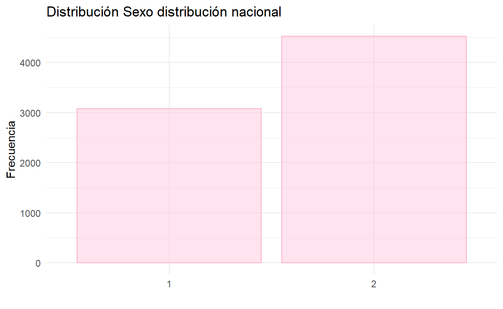

Explorando
Primero, cargaremos los paquetes que utilizaremos en esta sesión:
library(tidyverse)
library(sjmisc)
library(haven)
library(kableExtra)
library(readxl)
library(skimr)
library(sjPlot)
library(naniar)
library(ggcorrplot)
library(mice) # Imputación de datos
library(VIM) # Ver los datos perdidos de nuestra base de datos
library(naniar)
library(plyr)
library(dplyr)
#Cronbach analysis
library(psych)Y cargaremos la base de datos con variables ya seleccionadas:
df_2014 <- read_sav("data/Base_en_SAV_Primera_Encuesta_Nacional_de_Medio_Ambiente_2014.sav")
df_2015 <- read_sav("data/Base_en_SAV_Encuesta_Medio_Ambiente_2015.sav")
df_2016 <- read_sav("data/Base_en_SAV_Encuesta_de_Medio_Ambiente_2016.sav")
df_2018 <- read_excel("data/Base-en-excel-Encuesta-Nacional-de-Medio-Ambiente-2018.xlsx")Es importante mencionar que algunas preguntas están doble. Como pregunta abierta, y luego fueron codificadas a base de respuestas similares.
skimr::skim(df_2018)skimr::skim(df_2015)skimr::skim(df_2014)Vemos que la cantidad de datos faltantes es poca para el 2016, un 2% de la base.2014 y 2015 ya tienen mas del 30% de datos faltantes. Si ocurre en solo unas de las columnas, se pueden remover de la base para tener una base de datos limpia. Para eso usamos la funcion sort:
P50B P11A P11B P11C P11D P11E P11F
1921 1753 1753 1753 1753 1753 1753
P47_A P48 P49 P50 INICIO TERMINO fecha
716 716 716 716 631 598 163
P17F P17J FOLIO COMUNA region macrozona
1 1 0 0 0 0 Vemos que son 14 columnas con datos faltantes para el 2016. De 2170 observaciones, falta más de el 25% (598/2170*100%= 27.2%) de los datos para los indicadores. Removemos todas las columnas que le falten mas de 15% de las observaciones. En vez de observar cuales columnas tiene mas de 15% en el 2015 y 2014, removemos las columnas directamente ya que no son útiles en todo caso.
El siguiente Excel ofrece una descripción de la base de datos de las encuestas.
Primero la data era la siguiente.
| Año encuesta | Observaciónes | Preguntas | % Datos faltantes | Tipos caracter | Tipos numéricos | Tipos fecha | Tipos difftime |
|---|---|---|---|---|---|---|---|
| 2014 | 5057 | 89 | 31.90 | 7 | 82 | 0 | 0 |
| 2015 | 5664 | 113 | 35.40 | 12 | 101 | 0 | 0 |
| 2016 | 2170 | 344 | 2.23 | 47 | 294 | 1 | 2 |
| 2018 | 7601 | 169 | 0.00 | 85 | 84 | 0 | 0 |
vemos que habian columnas especificas con la mayoria de los datos faltantes. Las columnas que quedan, juntas, tienen menos del 0.19% con datos faltantes. Esta fracción del total se puede ignorar. Despues de limpiar el database, el overview cambia a la siguiente.
[1] 0.02297186[1] 0.1453809[1] 0.1862764| Año encuesta | Observaciónes | Preguntas | % Datos faltantes | Tipos caracter | Tipos numéricos | Tipos fecha | Tipos difftime |
|---|---|---|---|---|---|---|---|
| 2014 | 5057 | 89 | 0.1862764 | 7 | 43 | 0 | 0 |
| 2015 | 5664 | 113 | 0.1453809 | 12 | 52 | 0 | 0 |
| 2016 | 2170 | 344 | 0.0229719 | 47 | 283 | 1 | 0 |
| 2018 | 7601 | 169 | 0.0000000 | 85 | 84 | 0 | 0 |
Para simplificar el analisis, decido enfocarme solo en el 2016 y 2018 ya que es el mas completo de los años. A base del 2016 y 2018 decido cuales van a ser mis variables operacionales para todos los años.
#re-ordering dataframe to have indicators in front
df_2018_final <- df_2018 %>%
dplyr::select("ZONAS", "ID", "COMUNA", "NSE","TNSE","NEDAD","TEDAD","REGION","CUOTA","POND", P32,P33,P34,P35,P36,P37,P38,P39, everything())
sjPlot::view_df(df_2018_final)Primero que escoger mis variables independientes + de control voy a tener que entender su sesgo y varianca. Tengo mas que nada entender mis datos para asi tambien entender mis resultados.
Variables socio-económicos y socio-demograficas son:
De estas solo considero las cursivas. Las cursivas voy a analizar para multicolineadid y asi reducir las variables independientes usadas mas.
# Rename columns of independent variables
df_2018_final <- df_2018_final %>% dplyr::rename('Razon_Bici'= 'P8','Razon_Cambio_Cl'= 'P18','Automovil_Combustible'= 'P43', 'Sexo'='P32' ,'Edad'='P33' ,'Niv_Edu'='P34','Estudiante'='P36','Edu_Ingr'='P37','Trab_Ingr'= 'P38','Religion'='P39', 'Transporte_mas_freq' = 'P7')Vemos que hay un warning. Vamos a ver cual variable ocasiona estos warning y porque. Yo pienso que son Razon_Bici,Razon_Cambio_Cl,Automovil_Combustible. Las ultimas 3 variables tienen un “.”, un dato que se puede considerar NA. Como no se puede reemplezar lo mejor es imputarlo con el valor que es equivalente a “No Responde” para estas preguntas, el número 9 para Razon_Cambio_Cl(P18) y Automovil_Combustible (P43), el número 99 para Razon_Bici (P8). Cambiamos las columnas a numeric y terminamos. Despues, volvemos a formar un subset de las variables independientes.
unique(df_2018_final$ZONAS)
unique(df_2018_final$NSE)
unique(df_2018_final$TNSE)
unique(df_2018_final$NEDAD)
unique(df_2018_final$TEDAD)
unique(df_2018_final$Sexo)
unique(df_2018_final$Edad)
unique(df_2018_final$Niv_Edu)
unique(df_2018_final$Estudiante)
unique(df_2018_final$Razon_Bici)
unique(df_2018_final$Razon_Cambio_Cl)
unique(df_2018_final$Automovil_Combustible)
unique(df_2018_final$Transporte_mas_freq)
df_2018_final["Razon_Bici"][df_2018_final["Razon_Bici"] == "."] <- "9"
df_2018_final["Razon_Cambio_Cl"][df_2018_final["Razon_Cambio_Cl"] == "."] <- "99"
df_2018_final["Automovil_Combustible"][df_2018_final["Automovil_Combustible"] == "."] <- "99"
var_ind <- df_2018_final %>%
select(ZONAS, NSE, TNSE, NEDAD, TEDAD, Sexo, Edad, Niv_Edu, Estudiante, Edu_Ingr, Trab_Ingr, Religion, Razon_Bici,Razon_Cambio_Cl,Automovil_Combustible, Transporte_mas_freq
) %>%
group_by(ZONAS)
#checking the class of every column
sapply(var_ind, class)
#applying a new class
var_ind[] <- lapply(var_ind, function(x) as.numeric(as.character(x)))
sjPlot::view_df(var_ind)El nivel de correlación para todas las variables es alta ya que las variables son mayormente categóricas. Por eso, solo removemos variables que presenten una correlación alta para la mayoria de variables y que tengan una relación explicativa conceptualmente lógica. Es decir, no consideramos el TNSE,porque el NSE ya captura el estatus socio-económico. TEDAD, NEDAD es reemplazado por la variable continua de edad para tener mejor ajuste y distribución para el input del modelo (la edad es algo que se puede medir).
#only include numeric/nominal categoric values
colnames(var_ind) [1] "ZONAS" "NSE"
[3] "TNSE" "NEDAD"
[5] "TEDAD" "Sexo"
[7] "Edad" "Niv_Edu"
[9] "Estudiante" "Edu_Ingr"
[11] "Trab_Ingr" "Religion"
[13] "Razon_Bici" "Razon_Cambio_Cl"
[15] "Automovil_Combustible" "Transporte_mas_freq" Excluimos la variable Edu_Ingr (¿Cuál es el nivel de educación que alcanzó la persona que aporta el principal ingreso de este hogar?) por su nivel de correlación con Niv_Edu (¿Me podría decir cuál es tu nivel de educación?). Interesantemente, hay una correlación baja entre el Trab_Ing (¿Cuál es la profesión o trabajo de la persona que aporta el principal ingreso de este hogar?) y el Nivel de Educación.
Vemos que todas las otras variables tienen colinealidad baja por la que no se presenta multicolinealidad y se pueden usar todas. Importante es saber que muchas de estas variables no son continuas, pero nominales. Ahora vamos a ver las variables ordinales.
#only include numeric values
colnames(var_ind) [1] "ZONAS" "NSE"
[3] "TNSE" "NEDAD"
[5] "TEDAD" "Sexo"
[7] "Edad" "Niv_Edu"
[9] "Estudiante" "Trab_Ingr"
[11] "Religion" "Razon_Bici"
[13] "Razon_Cambio_Cl" "Automovil_Combustible"
[15] "Transporte_mas_freq" Vemos que la NEDAD y TEDAD estan altamente correlacionados. Es logico porque las dos son variables ordinales de la edad. Sin embargo, nos quedamos con TEDAD que divide la edad en cuatro categorias en vez de 3 como por NEDAD. Esto creo que mas varianza en el input del modelo. El TNSE lo excluimos por la misma razon.
Para reducir dimensionalidad y ocuparnos de tener las variables que son significante vamos a reducir la cantidad de variables independientes.
Si el p<0.05 asumimos que las variables son en verdad independientes. Solo hago el analisis en los que supongo conceptualmente que tienen dependencia.
chisq.test(var_ind$Estudiante, var_ind$Trab_Ingr,simulate.p.value = TRUE)
Pearson's Chi-squared test with simulated p-value (based on
2000 replicates)
data: var_ind$Estudiante and var_ind$Trab_Ingr
X-squared = 173.26, df = NA, p-value = 0.01049chisq.test(var_ind$Estudiante, var_ind$Razon_Bici,simulate.p.value = TRUE)
Pearson's Chi-squared test with simulated p-value (based on
2000 replicates)
data: var_ind$Estudiante and var_ind$Razon_Bici
X-squared = 245.86, df = NA, p-value = 0.005497chisq.test(var_ind$Razon_Bici, var_ind$Razon_Cambio_Cl,simulate.p.value = TRUE)
Pearson's Chi-squared test with simulated p-value (based on
2000 replicates)
data: var_ind$Razon_Bici and var_ind$Razon_Cambio_Cl
X-squared = 146.61, df = NA, p-value = 0.0004998chisq.test(var_ind$Razon_Bici, var_ind$Transporte_mas_freq, simulate.p.value = TRUE)
Pearson's Chi-squared test with simulated p-value (based on
2000 replicates)
data: var_ind$Razon_Bici and var_ind$Transporte_mas_freq
X-squared = 3716.1, df = NA, p-value = 0.0004998chisq.test(var_ind$Niv_Edu, var_ind$Estudiante,simulate.p.value = TRUE)
Pearson's Chi-squared test with simulated p-value (based on
2000 replicates)
data: var_ind$Niv_Edu and var_ind$Estudiante
X-squared = 3414.8, df = NA, p-value = 0.0004998chisq.test(var_ind$Automovil_Combustible, var_ind$Niv_Edu,simulate.p.value = TRUE)
Pearson's Chi-squared test with simulated p-value (based on
2000 replicates)
data: var_ind$Automovil_Combustible and var_ind$Niv_Edu
X-squared = 849.91, df = NA, p-value = 0.0004998chisq.test(var_ind$Niv_Edu, var_ind$NSE,simulate.p.value = TRUE)
Pearson's Chi-squared test with simulated p-value (based on
2000 replicates)
data: var_ind$Niv_Edu and var_ind$NSE
X-squared = 6218.8, df = NA, p-value = 0.0004998chisq.test(var_ind$Trab_Ingr, var_ind$NSE,simulate.p.value = TRUE)
Pearson's Chi-squared test with simulated p-value (based on
2000 replicates)
data: var_ind$Trab_Ingr and var_ind$NSE
X-squared = 12215, df = NA, p-value = 0.0004998chisq.test(var_ind$Transporte_mas_freq, var_ind$NSE, simulate.p.value = TRUE)
Pearson's Chi-squared test with simulated p-value (based on
2000 replicates)
data: var_ind$Transporte_mas_freq and var_ind$NSE
X-squared = 603.93, df = NA, p-value = 0.0004998chisq.test(var_ind$ZONAS, var_ind$NSE,simulate.p.value = TRUE)
Pearson's Chi-squared test with simulated p-value (based on
2000 replicates)
data: var_ind$ZONAS and var_ind$NSE
X-squared = 52.031, df = NA, p-value = 0.0004998Todas parecen ser significantes, y por eso, independientes. Sin embargo, las aproximaciones pueden ser erroneas por los valores tan chicos. Esto resulta en un warning que me dio primero que usar el simulated p-value. Online decia esto: “It gave the warning because many of the expected values will be very small and therefore the approximations of p may not be right.”
Para variables categoricas en realidad no se puede medir la correlacion, porque no son variables parametricas. Por eso, usamos el test Kruskal Wallis, cual mide el Chi-square sobre estas variables ordinales y categoricas. Ya que nuestra variable independiente principal es “ZONA” relacionamos los tests cada vez a esta variable. Si el valor-p es <0.05, asumimos que hay una diferencia significante entre encuestados de diferentes zonas.
kruskal.test(ZONAS~ NSE, data = var_ind)
Kruskal-Wallis rank sum test
data: ZONAS by NSE
Kruskal-Wallis chi-squared = 33.346, df = 4, p-value =
1.014e-06kruskal.test(ZONAS~ TEDAD, data = var_ind)
Kruskal-Wallis rank sum test
data: ZONAS by TEDAD
Kruskal-Wallis chi-squared = 49.579, df = 3, p-value =
9.823e-11kruskal.test(ZONAS~ Edad, data = var_ind)
Kruskal-Wallis rank sum test
data: ZONAS by Edad
Kruskal-Wallis chi-squared = 163.69, df = 77, p-value =
3.336e-08kruskal.test(ZONAS~ Sexo, data = var_ind)
Kruskal-Wallis rank sum test
data: ZONAS by Sexo
Kruskal-Wallis chi-squared = 1.8526, df = 1, p-value = 0.1735kruskal.test(ZONAS~ Niv_Edu, data = var_ind)
Kruskal-Wallis rank sum test
data: ZONAS by Niv_Edu
Kruskal-Wallis chi-squared = 39.24, df = 9, p-value =
1.043e-05kruskal.test(ZONAS~ Estudiante, data = var_ind)
Kruskal-Wallis rank sum test
data: ZONAS by Estudiante
Kruskal-Wallis chi-squared = 44.162, df = 3, p-value =
1.394e-09kruskal.test(ZONAS~ Trab_Ingr, data = var_ind)
Kruskal-Wallis rank sum test
data: ZONAS by Trab_Ingr
Kruskal-Wallis chi-squared = 65.623, df = 11, p-value =
8.227e-10kruskal.test(ZONAS~ Religion, data = var_ind)
Kruskal-Wallis rank sum test
data: ZONAS by Religion
Kruskal-Wallis chi-squared = 121.18, df = 7, p-value < 2.2e-16kruskal.test(ZONAS~ Razon_Bici, data = var_ind)
Kruskal-Wallis rank sum test
data: ZONAS by Razon_Bici
Kruskal-Wallis chi-squared = 342.32, df = 11, p-value <
2.2e-16kruskal.test(ZONAS~ Razon_Cambio_Cl, data = var_ind)
Kruskal-Wallis rank sum test
data: ZONAS by Razon_Cambio_Cl
Kruskal-Wallis chi-squared = 64.802, df = 4, p-value =
2.833e-13kruskal.test(ZONAS~ Automovil_Combustible, data = var_ind)
Kruskal-Wallis rank sum test
data: ZONAS by Automovil_Combustible
Kruskal-Wallis chi-squared = 47.257, df = 8, p-value =
1.37e-07kruskal.test(ZONAS~ Transporte_mas_freq, data = var_ind)
Kruskal-Wallis rank sum test
data: ZONAS by Transporte_mas_freq
Kruskal-Wallis chi-squared = 796.99, df = 8, p-value < 2.2e-16Vemos que el sexo tiene un valor-p > 0.05 por la que no la consideramos. Tambien vemos que hay mas varianza entre las zonas para la variable ordinal de edad, TEDAD, en vez de la variable parametrica, Edad. Aún asi, tomamos la edad ya que es parametrica.
Nuestra variable independiente sigue siendo las zonas. Nuestras otras variables sirven como control ya que son indicadores socio-económicos y socio-demograficos.
Zonas:
Vemos que hay mas respondientes en las zona 4 (el Sur), alrededor de un 30% mas. Es importante considerar esto, porque no solo nuestro modelo estara mas entrenado para la zona 4, sino que tambien la relacion nacional (el baseline del analisis) estara sesgado a respondientes de la zona 4. Otras zonas parecen tener una cantidad relativemente igual de encuestados.
var_ind_s_control %>%
ggplot(aes(x = as_factor(ZONAS))) +
geom_bar(color = "#ffafcc", fill = "#ffc8dd", alpha = 0.5) + # Colores
labs(title = "Barplot de respondientes por zonas",
x = " ", y = "Frecuencia") + # Títulos
theme_minimal(base_family = "Roboto Condensed")
TEDAD:
Vemos que la edad esta razonablemente distruida de una forma normal para cada zona. Sin embargo, vemos que la zona 1 cuenta con una cantidad de encuestados altos bajo la edad de 25. En la zona 4, resalta que una cantidad alta de respondientes esta alrededor de los 50 anos. Las zonas 1 y 2 parecen tener relativamente mas jovenes que las zonas 3 y 4. Sin embargo, casi se puede ignorar esta diferencia.
A nivel nacional, la distribucion es muy similar a los de las zonas con un sesgo ligero a la izquierda, cual se puede deber a las zonas 1 y 2.
var_ind_s_control %>%
ggplot(aes(x = Edad, na.rm = T)) +
geom_histogram() +
facet_grid(~ZONAS) +
labs(x = "Edad por Zona", y = "Frecuencia",
title = "Edad", caption = "Fuente: Encuesta Nacional 2018")
var_ind_s_control %>%
ggplot(aes(x = Edad, na.rm = T)) +
geom_histogram() +
labs(x = "Edad", y = "Frecuencia",
title = "Edad distribucion Nacional", caption = "Fuente: Encuesta Nacional 2018")
NSE:
Como se esperaba, el Nivel socioeconomico es mas alto en el Sur. Donde 1 (clase alta, ABC1) y 2 (clase media acomodada, C2) es lo mas alto. 3 a 5 va de clase media a clase mas pobre. El Norte (zona 1) parece tambien tener una cantidad alta de clase alta. La zona central y RM parecen tener una distribucion mas normal con individuos de todas las clases. En todos los clasos, la cantidad de pobres que se entrevisto es muy baja. Esto anade un sesgo al Nivel Socio-económico ya que nos falta datos de la percepción de esta clase de gente. Para la otra clase se puede hablar de una representación relativamente justa.
var_ind_s_control %>%
ggplot(aes(x = as_factor(NSE))) +
facet_grid(~ZONAS) +
geom_bar(color = "#ffafcc", fill = "#ffc8dd", alpha = 0.5) + # Colores
labs(title = "Barplot de NSE dividido en Zonas",
x = " ", y = "Frecuencia") + # Títulos
theme_minimal(base_family = "Roboto Condensed")
Nivel de educación:
Vemos que en la mayoria de los casos el nivel de educación se divide en dos categorias: * 1) Universitaria completa (9) * 2) Media completa (5)
Evidentemente, no hay una distribución normal de los datos. Esto es alarmante ya que indica que la variable puede anadir mucha inprecisión a los resultados del modelo.
var_ind_s_control %>%
ggplot(aes(x = as_factor(Niv_Edu))) +
facet_grid(~ZONAS) +
geom_bar(color = "#ffafcc", fill = "#ffc8dd", alpha = 0.5) + # Colores
labs(title = "Barplot de Nivel de educación por zonas",
x = " ", y = "Frecuencia") + # Títulos
theme_minimal(base_family = "Roboto Condensed")
Opinion de la razón del cambio climatico:
Vemos que la mayoria de los encuestados, sin importar de donde vienen piensan mayormente que el cambio climatico viene por la actividad humana (1). Por esta razón, decidimos excluir esta variable de nuestro set de variables independientes. Una gran cantidad del grupo no respondió (99).
var_ind_s_control %>%
ggplot(aes(x = as_factor(Razon_Cambio_Cl))) +
facet_grid(~ZONAS) +
geom_bar(color = "#ffafcc", fill = "#ffc8dd", alpha = 0.5) + # Colores
labs(title = "Barplot de Razón del cambio climatico por zonas",
x = " ", y = "Frecuencia") + # Títulos
theme_minimal(base_family = "Roboto Condensed")
#remove all NA from independent variables
var_ind["Automovil_Combustible"][var_ind["Automovil_Combustible"] == "99"] <- NA
var_ind["Razon_Bici"][var_ind["Razon_Bici"] == "99"] <- NA
var_ind["Razon_Bici"][var_ind["Razon_Bici"] == "88"] <- NA
var_ind["Religion"][var_ind["Religion"] == "9"] <- NA
var_ind["Automovil_Combustible"][var_ind["Automovil_Combustible"] == "8"] <- NA#convert all variables to factorSalvamos el dataframe para que lo podamos usar en la construcción de los modelos.
write_sav(var_ind_s_control, "var_independientes_y_control.sav")